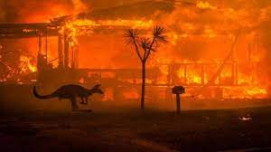

Alertas
Insertos en la cuarta revolución industrial, la tecnología irrumpe en todos los ámbitos de la vida: aparecen la robótica, la biotecnología, la inteligencia artificial. Desaparecen profesiones y surgen nuevas.
Información para viajeros
En general, las condiciones sanitarias del país son excelentes. Conviene contratar un seguro de salud.

Riesgos locales
El viajero a Australia debe prestar atención y poner las medidas preventivas pertinentes frente a las enfermedades transmitidas por el agua y los alimentos, transmitidas por mosquitos (dengue, Ross River virus, Barmah forest virus) o infecciones de transmisión sexual